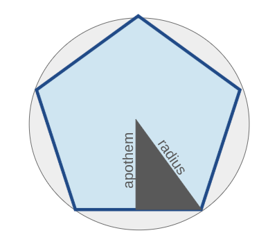
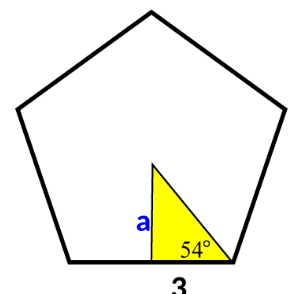
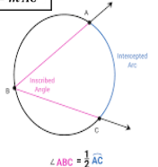

Geometry Study Guide
This guide follows class notes and explains each concept clearly so you understand both the definitions and the reasoning behind them.
Circumference
Definition: The circumference of a circle is the distance around the circle.
Should I round?
When you are asked to find a circumference, leave the answer in terms of π (exact form) unless you are asked to approximate.
Exact form example: 10π
How do I approximate?
To approximate, use a calculator and press the π button. Then multiply normally and round if needed.
Example:
r = 5, so C = 2πr = 10π ≈ 31.4
Polygons
Polygons:
The center and radius of a regular polygon are the center and radius of the circumscribed circle.The distance from the center to any side of a regular polygon is called the apothem.
A polygon is inscribed in a circle if all its vertices lie on the circle.

The center of the inscribed circle in a polygon is called the incenter.
Important rule:
If a quadrilateral is inscribed in a circle, its opposite angles are supplementary.
Special case:
If a parallelogram is inscribed in a circle:
- Opposite angles are congruent
- Opposite angles are supplementary
So angles are both congruent and supplementary, each must be 90°.
So, The parallelogram is a rectangle.
Area of Polygons
A=1/2aP
The Areaof a regular polygon is the length of the apothem times the perimeter of the polygon times one half.
Calculating the Area of Regular Polygons
Step 1-Find the measure of each interior angle by using N(number of sides)A(measure of interior angle)=(n-2) times 180
Step 2-Divide the interior angles by 2, and set up equation like tan x degrees= opp/adj
Step 3-After solving, multiply the sides of the triangle, then multiply by the amount of sides to find the area.
Why does it work?
This works because regular polygons can be sliced into identical triangles and then get added up to form a single shapoe. Find the area of one triangle, and then you can add them all up to find total area.

Circle Basics
A circle is the set of all points equidistant from a center point.
Click Here: Circle Diagram
Sectors
A sector of a circle is a region bound by two radii and their intercepted arc.
Sectors are named using: - one arc endpoint - center of circle - other arc endpoint
Area: A sector is a fraction of a circle’s area.
Formula: (θ / 360) × πr²
Steps to Finding the Area of a Sector of a Circle:
Step 1-Find the radius of a circle with the formula πr²
Step 2-Find the angle measure of the arc of the sector
Step 3-Divide the angle measure by 360- That is the cumulative measure of the whole circle
Step 4-Multiply the quotient by the area of the whole circle and you will get your answer
Arcs
.png)
Adjacent arcs are arcs of the same circle that share exactly one endpoint.
Arc Addition Postulate:
The measure of an arc formed by two adjacent arcs is the sum of the two arc measures.
Idea: You can “combine” arcs by adding their measures.
Arcs:
Arcs are a curved figure line that connects two points on a circle, and all points connect them by a single path.
Semicircles:
Endpoints are the endpoints of the diameter, and the measure is 180 degrees. Named using 3 letters.Major Arcs:
Measure is greater than a semicircle. You can find the measure of degrees of an arc by subtracting the measure of the minor arc by 360. Also named with 3 letters.Minor Arcs:
Measure is less than a semicircle. Find degrees of arc by subtracting the measure of the major arc in the circle by 360. Named with 2 letters.Finding Arc Length:
Step 1-Find the circumference of the circle by doing 2 times the length of the radius, and then multiplying by pi
Step 2-Find the angle measure of the arc that you are finding the distance of and divide by 360
Step 3-Multiply both of these numbers to find final answer
Inscribed Angles
An inscribed angle has its vertex on the circle and its sides are chords.
Theorem:
The measure of an inscribed angle is half the measure of its intercepted arc.

Formula idea:
Angle = ½ arc